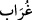
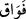
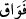
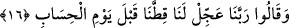
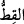
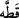

(
), aslında (
) gibi zammelidir; yalnız el-Kâmûs’ta da belirtildiği üzere (
)
şeklinde fethalı da olabilir ve “emmekte olan yavrunun iki çekişi arasındaki zaman”
anlamındadır. Çünkü develer sağılırken önce sağılır, sonra sütün daha fazla gelmesini
temin maksadıyla, yavrusunu emzirsin diye çok az bir miktar bırakılıp ikinci kez sağılır.
Demek isteniyor ki, o korkunç sesin gelmesi durumunda bu kadar bile gecikmez.
“Ecelleri gelince, bir an bile geri kalamazlar” (en-Nahl 16/61) âyetinde ifâde
edildiği gibi.
(
), çok az bir süreden ibârettir. Hadiste buyurulur ki: “Fevak miktarınca itikâfta
kalanlar, İsmailoğullarından bir köle âzâd etmiş demektir.”[4] Diğer bir hadiste de
şöyle buyurulur: “Allah yolunda bir deve fevâkı miktarınca savaşanlara cennet farz
olmuştur.”[5]
Bu iki âyet-i kerime, bir nevi Peygamber Efendimiz’in gönlünü teselli etmekte;
yalanlamalarından dolayı gönlü daralmasın ve kendisini inkâr ettikleri için üzülmesin
diye Mekkeli kâfirlere önem vermekten arındırmaktadır. Çünkü onun kavmi kendisini
yalanladığı gibi, geçmiş hizipler de peygamberlerini yalanlamışlardı; üstelik onlar onun
kavminden daha güçlü, daha fazla sayıda olmasına rağmen, bunlar (Mekkeli kâfirler),
birleşen kabilelerden daha az nefere sâhip bir bölüktü. Ayrıca bunlar, ilâhî kahrın
kendini gösterdiği bir sahne ve ilâhî gazap ateşinin odunuydular. Bunların ne
toplulukları ne bedeni bakımdan sâhip oldukları güç ve ne de araçlarının daha fazla
olması kendilerine bir fayda sağlamıştır. Kureyşlilerin durumu da aynıdır: Yâni bunların
beklemeleri de ilâhî kahrın bir sonucu ve Kahhâr ism-i celiline dayalı gazap
ateşlerinden bir ateştir.
16. Rabbimiz! Bizim payımızı hesap gününden önce ver, dediler.
Mekkeliler bu sözü, cezâlarının âhiret gününe tehir edildiğini duyunca istihzâ edip
dalga geçerek söylemişlerdi. Sözün sâhibi, Nadr b. Hâris b. Alkame b. Kinde el-
Huzâî ve benzerleridir. Nadr Mekkelilerin şeytanlarından olan bu herif hakkında
Kur’an’da on küsür âyet nâzil olmuştur. “Üzerimize gökten taş yağdır!” (el-Enfâl
8/32) diyen de o idi.
“Rabbimiz!” Duâlarına bu nidâ ile başlamaları, istihzâlarını son raddesine vardırmak
amacı gütmektedir. Bunu sanki büyük bir arzu ve yönelişle niyaz ediyormuş gibi
yapmaktadırlar.
“Bizim payımızı hesap gününden önce ver,” (
), bir şeyin parçası olup biri, bir
şeyi kopardığında kullanılan (
) fiilindendir. Buradakinden maksad ise pay ve
parçadır. Çünkü pay da bir şeyin ifrazlı parçasıdır.